BIOS 25328 · Lecture 5
2026-04-06
We covered the multiple testing problem
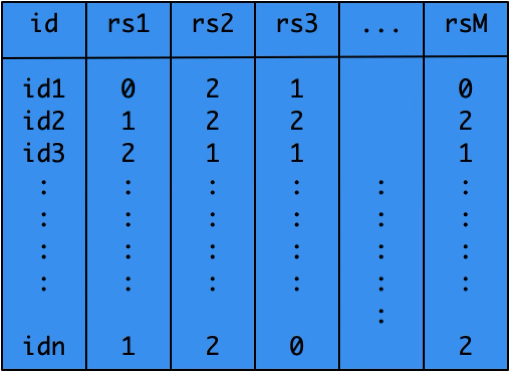
Entries: 0 / 1 / 2 = copies of minor allele (n individuals × M SNPs)
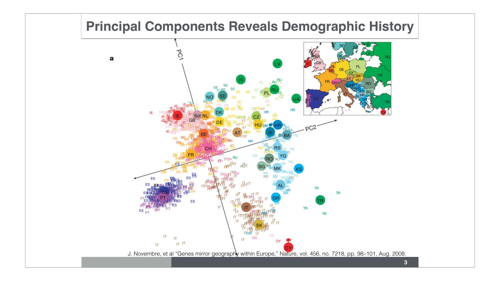
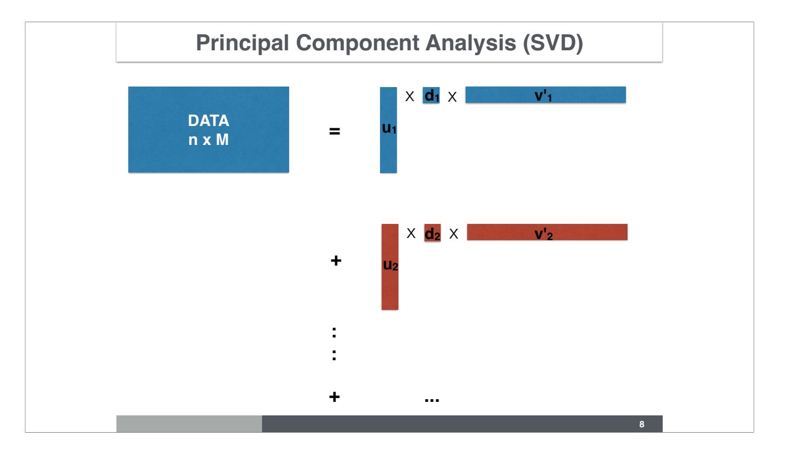
\[\mathbf{X} = \mathbf{U}\mathbf{D}\mathbf{V}^\top = \sum_k d_k \, \mathbf{u}_k \mathbf{v}_k^\top\]
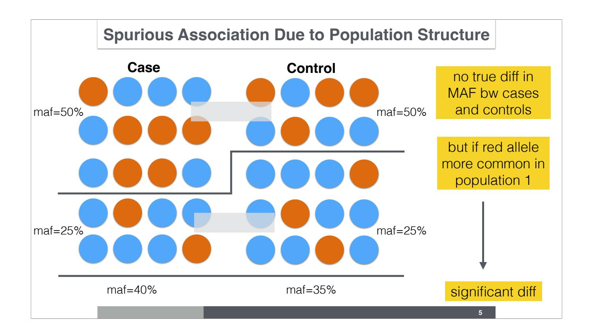
1. Genomic control (Devlin & Roeder 1999) Divide all χ² by inflation factor λ — simple, but blunt
2. Infer latent sub-populations (Pritchard et al. 2000) STRUCTURE / ADMIXTURE → run GWAS within each group and meta-analyze
4. Mixed effects modeling (EMMAX, Kang et al. 2010) Kinship / GRM as random effect — gold standard, computationally intensive
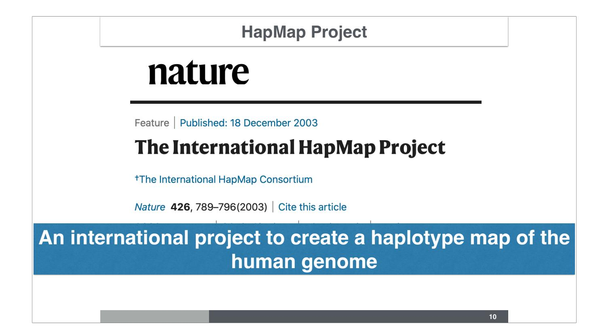
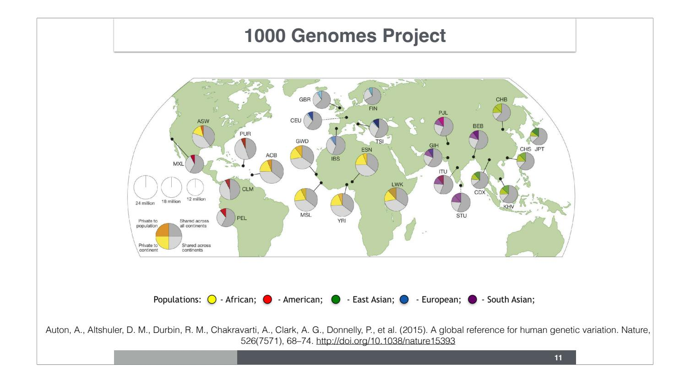
Auton et al., Nature 526, 68–74 (2015)
| Code | Population |
|---|---|
| ASW | African ancestry, SW USA |
| CEU | N/W Europeans (CEPH) |
| CHB | Han Chinese, Beijing |
| CHD | Chinese, Denver |
| GIH | Gujarati Indians, Houston |
| JPT | Japanese, Tokyo |
| Code | Population |
|---|---|
| LWK | Luhya, Kenya |
| MXL | Mexican, Los Angeles |
| MKK | Maasai, Kenya |
| TSI | Toscani, Italy |
| YRI | Yoruba, Nigeria |
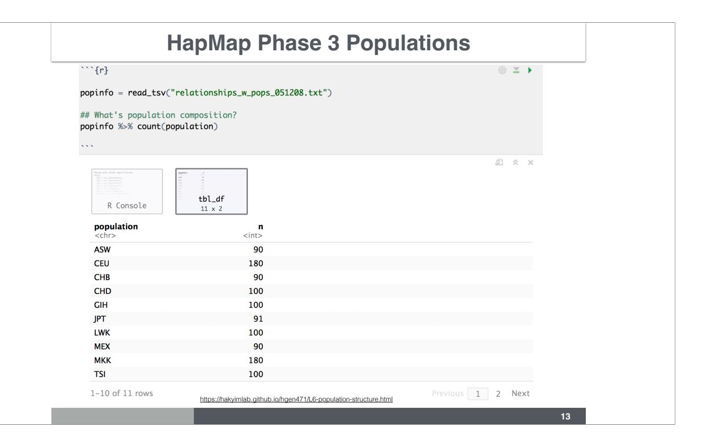
% count(population). Table shows ASW=90, CEU=180, CHB=90, CHD=100, GIH=100, JPT=91, LWK=100, MEX=90, MKK=180, TSI=100." class="r-stretch">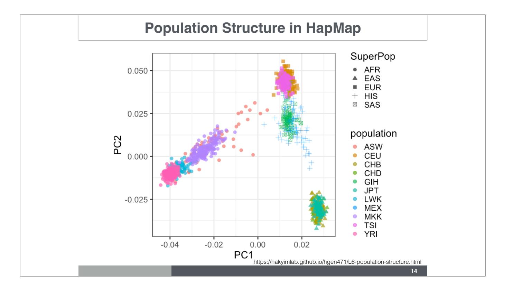
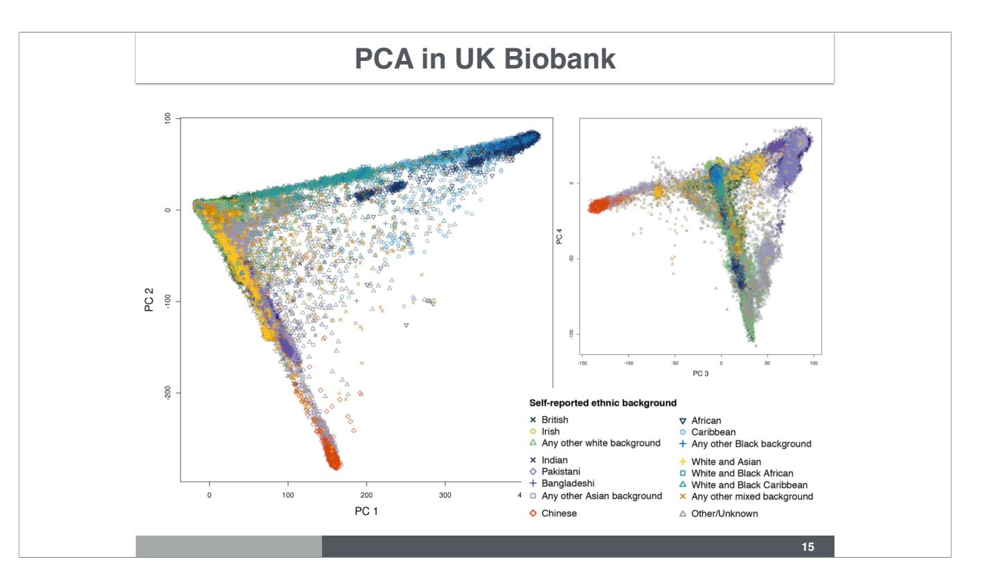
Special methods (flashPCA, BOLT-LMM) required for 500,000+ individuals.
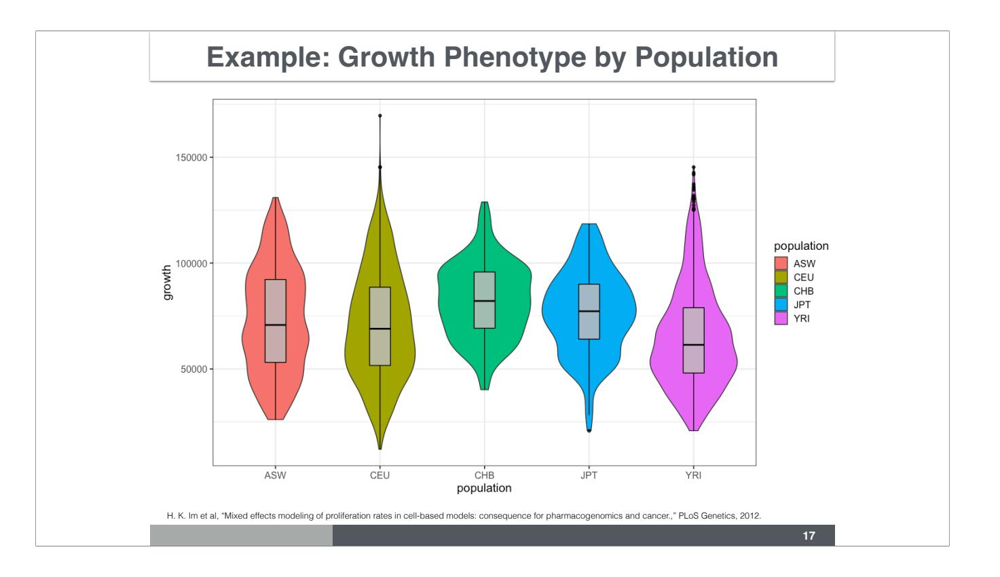
Im et al., PLoS Genetics (2012)
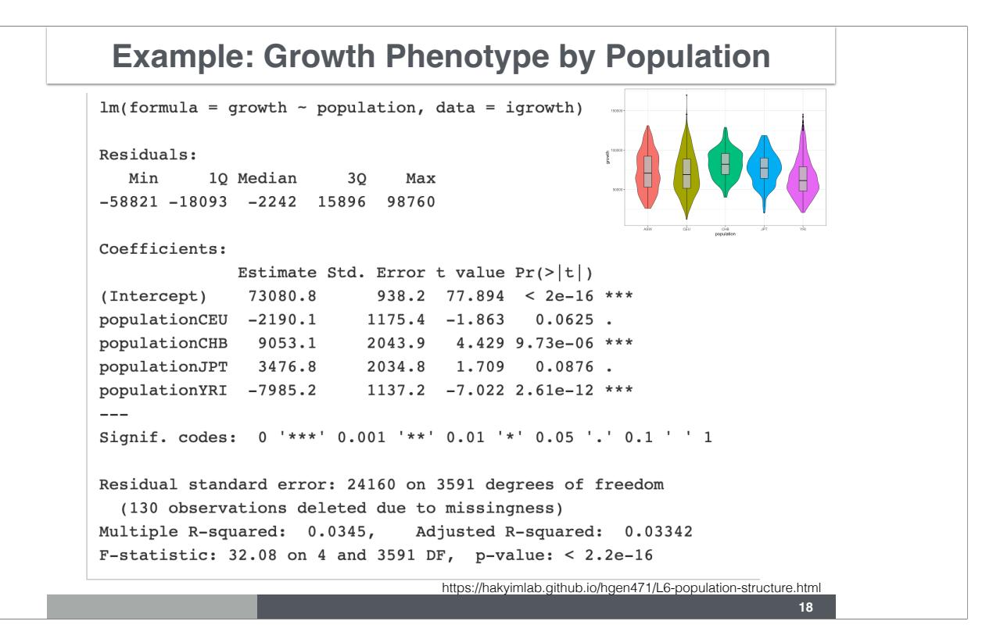
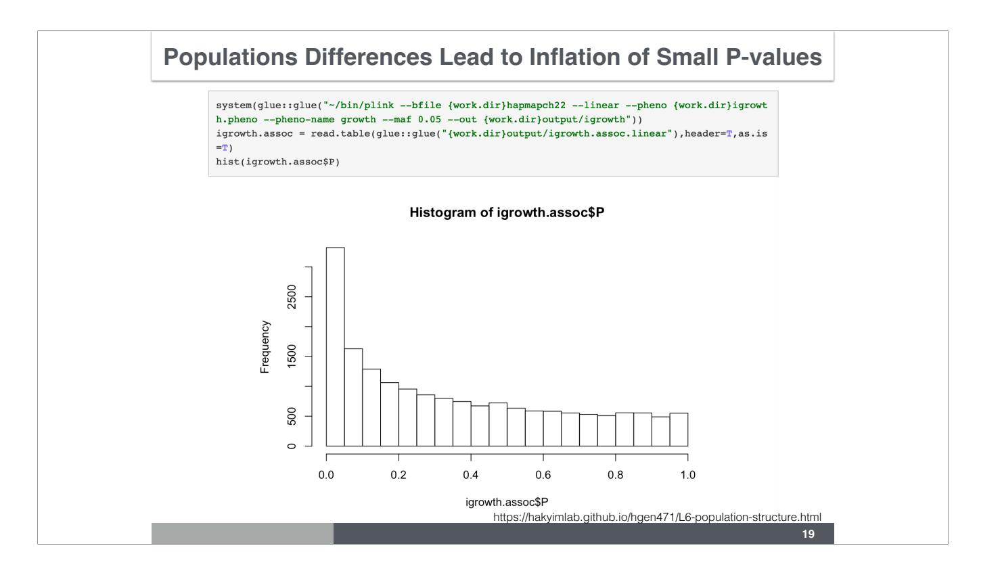
J-shaped histogram → inflation (flat = no signal, J-shape = confounding or polygenic)
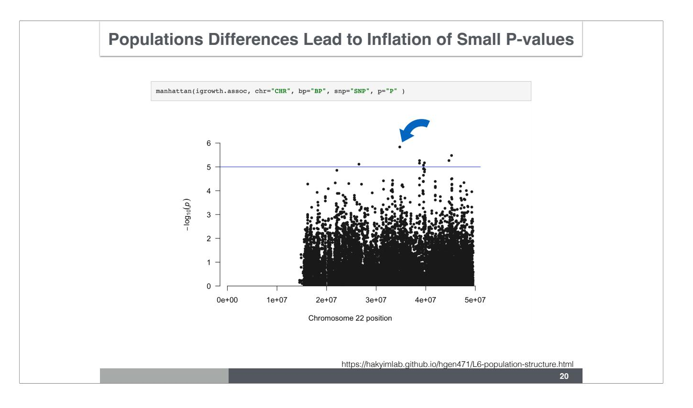
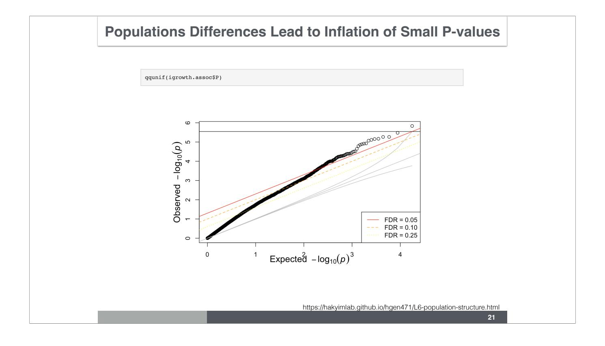
Departure from identity line at all quantiles → population structure, not true signal
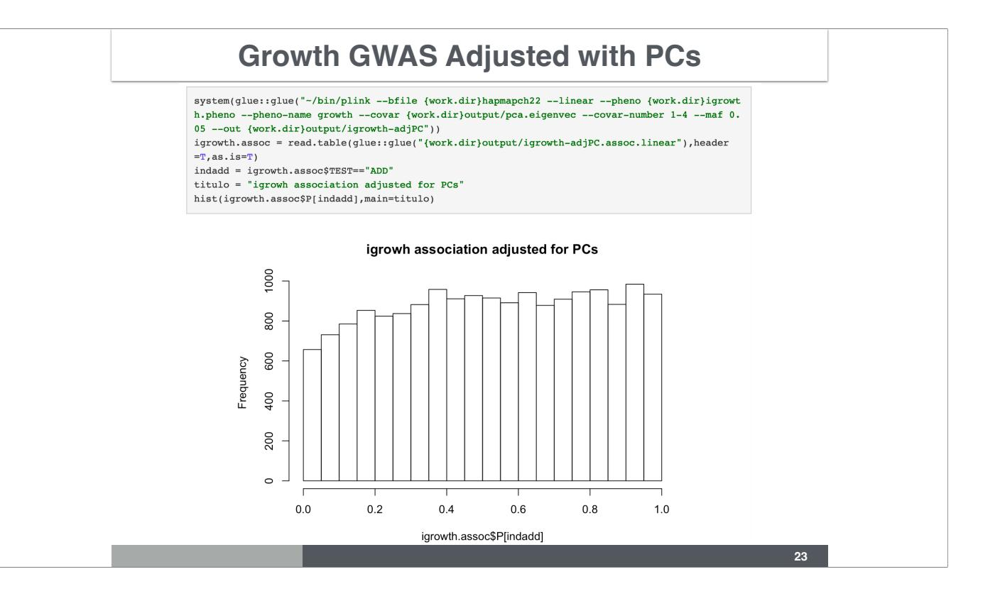
Scalar multiplication:
\[2 \cdot \begin{bmatrix} 1 & 8 & -3 \\ 4 & -2 & 5 \end{bmatrix} = \begin{bmatrix} 2 & 16 & -6 \\ 8 & -4 & 10 \end{bmatrix}\]
Transposition:
\[\begin{bmatrix} 1 & 2 & 3 \\ 0 & -6 & 7 \end{bmatrix}^{\!\top} = \begin{bmatrix} 1 & 0 \\ 2 & -6 \\ 3 & 7 \end{bmatrix}\]
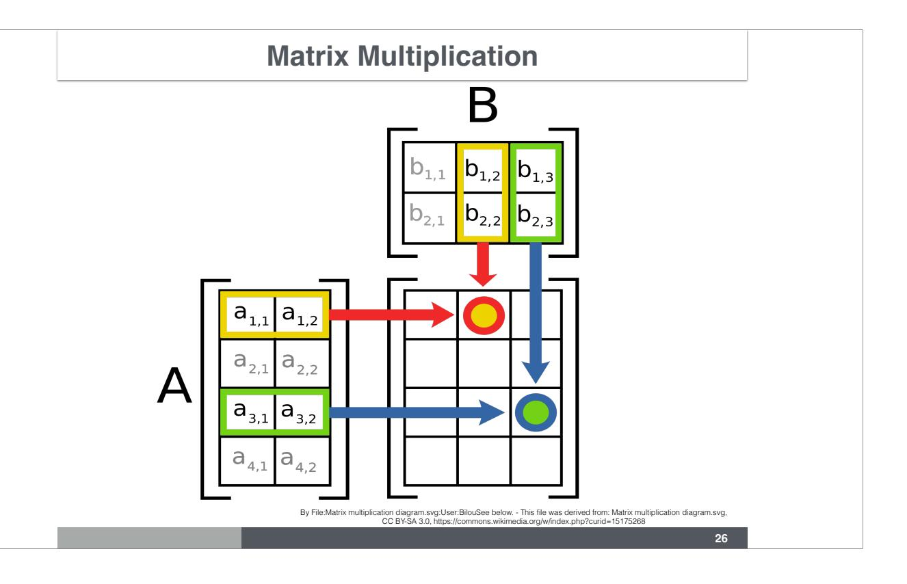
\[(A \cdot B)_{ij} = \sum_{k} A_{ik}\, B_{kj}\]
Order matters: \(AB \neq BA\) in general
\[a_{1,1}x_1 + \cdots + a_{1,n}x_n = b_1\] \[\vdots\] \[a_{m,1}x_1 + \cdots + a_{m,n}x_n = b_m\]
Written compactly: \(\mathbf{A}\mathbf{x} = \mathbf{b}\)
\[Y = X\beta + \varepsilon\]
Multiply both sides on the left by \(X^\top\):
\[X^\top Y = X^\top X\,\beta + X^\top\varepsilon\]
Setting \(X^\top\varepsilon = 0\) and solving:
\[\boxed{\hat{\beta} = (X^\top X)^{-1} X^\top Y}\]
Nancy Cox, 2017 ASHG Presidential Address (20:04 – 24:12):
PC plot of BioVU patients colored by decade of birth → dramatic shifts in ancestry composition over time
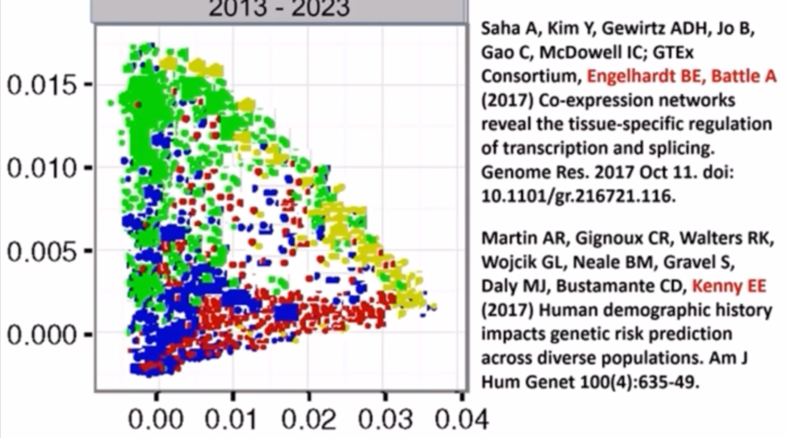
Daniella Witten’s SVD Tweetorial (24 tweets) twitter.com/WomenInStat/status/1285611207530098688
\[\mathbf{X} = \mathbf{U}\mathbf{D}\mathbf{V}^\top\]
Under random mating (paternal and maternal alleles independent):
If \(p\) = minor allele frequency:
\[P(AA) = p^2 \qquad P(AC) = 2p(1-p) \qquad P(CC) = (1-p)^2\]
Test: Chi-square comparing observed vs expected counts:
\[\sum \frac{(O - E)^2}{E} \sim \chi^2_{\text{df}=(r-1)(c-1)}\]
Departures → genotyping error, population structure, or selection
\[Y = G + E \qquad Y = A_G + NA_G + E\]
| Heritability | Definition |
|---|---|
| Broad-sense \(H^2\) | \(\mathrm{Var}(G)/\mathrm{Var}(Y)\) |
| Narrow-sense \(h^2\) | \(\mathrm{Var}(A_G)/\mathrm{Var}(Y)\) |
| Chip/SNP \(h^2_\text{SNP}\) | Additive component captured by genotyped variants |
Additive model: \[Y = \sum_{k=1}^{M} X_k \beta_k + E\]
| Concept | Key point |
|---|---|
| Genotype matrix | Encodes ancestry; PCA reveals population structure |
| Novembre 2008 | PC1/PC2 of Europeans reproduces geography |
| Population stratification | Confounds GWAS → spurious associations |
| Genomic control | Inflation correction via λ — blunt |
| PCs as covariates | Most widely used; sensitivity-test # of PCs |
| Mixed models | Best for subtle structure & relatedness |
| SVD | \(X = UDV^\top\); U columns = PC scores |
| HWE | Chi-square test; departures flag errors/selection |
| \(h^2\) | Narrow-sense = additive genetic variance fraction |